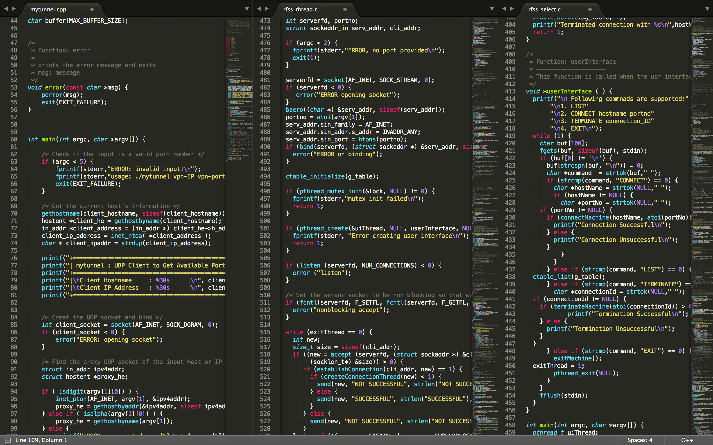

Jiho Choi
I am a 3rd-year data scientist at Netmarble AI Center. I received M.S. in Computer Science & Engineering from Seoul National University, where I was privileged to be advised by Prof. Chong-kwon Kim. I received B.S. in Computer Science from Purdue University, West Lafayette. My research interests include data mining and graph neural networks.
Curriculum Vitae (CV)Under Reconstruction
I am currently reconstructing my portfolio web
()
and the server.
Please visit GitHub or LinkedIn for more information. 😀

Education
Seoul National University, Seoul, Republic of Korea
M.S. in Computer Science & Engineering, 2018 - 2020
- M.S. Thesis:
-
Relevant Coursework:
- Data Mining, Social Network Analysis, Social Media Analysis, Big Data & Deep Learning Systems, Pattern Recognition
- Advisor: Chong-kwon Kim

Purdue University, West Lafayette, IN, USA
B.S. in Computer Science, Dec. 2017
-
Relevant Coursework:
- Systems: Compilers, Operating Systems, Computer Networks, Database Systems, Computer Security, Systems Programming
- Software Engineering: Software Engineering, Software Testing, Object-oriented Programming
- Computational Science & Engineering: Numerical Methods, Differential Equations, Analysis of Algorithms, Competitive Programming
- Individual Research: Cloud Computing Security

Experience
Data Scientist
Netmarble Corp., Seoul, South Korea, Sep. 2020 - Current
- Data Science Division / Abnormal User Information Team
Graduate Research Assistant
Social & Computer Network Lab. @ SNU, Seoul, South Korea, Jan. 2018 - Aug. 2020
- Graph Neural Networks

Software Development Engineer Intern
NAVER LABS Corp., Seongnam, Gyeonggi, South Korea, Jul. 2019 - Jan. 2020

Software Engineering Intern
Fasoo Inc., Seoul, South Korea, May. 2017 - Aug. 2017
(Teaching Assistant)
Engineering Mathematics 2 (Probability) @ SNU
Graduate Teaching Assistant, Spring 2018
Computer Architecture @ Purdue University
Undergraduate Teaching Assistant, Fall 2016, Spring 2017, Fall 2017
Research
Interest:
- Social Network Analysis & Evolving Graph
- Graph Mining & Graph Neural Network
- Data Mining & Machine Learning
Publications
Refereed Conference Publications
(* indicates equal contributions)
Journal Publications
Domestic Publications
Projects
TO BE UPDATED
Previews & source code will be updated soon.
Bot Detection in MMORPGs
Bot Detection Model for Collusive Workers, Macro, and Automated Programs in Online Games
Anomaly Detection in Online Games
Anomaly Detection Model for Game Hack, Memory Manipulation, and Bug Abusing (Glitch)
Payment Fraud Detection in P2E MMORPGs
PU GNN: Chargeback Fraud Detection in P2E MMORPGs via Graph Attention Networks with Imbalanced PU Labels
LiDAR Registration Tool
Point Cloud and Aerial Image Annotation Tool (Client-side)
Diffusion Network Analysis
Rumor Diffusion Network Analysis for Message Classification in Social Media
Movie Network Analysis
Graph Mining and Network Analysis Project
Kernel Modification
Process Scheduling, Inter Process Communication, ... Projects for XINU OS
File Sharing System
uTorrent like Remote File Sharing System built with Socket Programming
Mini Scalar
Programming Language Implementation, Interpreter / GC (VM) Modification
My Own Shell
Bash like Shell Implementation with Lax/Yacc
Sniff & Spoof
Packet Sniff & Spoof Project, Man-in-the-middle attack
(CS426 Computer Security @ Purdue University)
Projects in Distributed Systems
Projects in Apache Kafka, Hadoop, Spark, Hive, Storm, Beam, Nemo
(DB, CCS @ Purdue, BDDL @ SNU)
Sentinel Data Vault
GUI DB managing software support encryption (salting)
Classmate Finder
Bulletin Board Style Classmate Finder Application built with Node.js